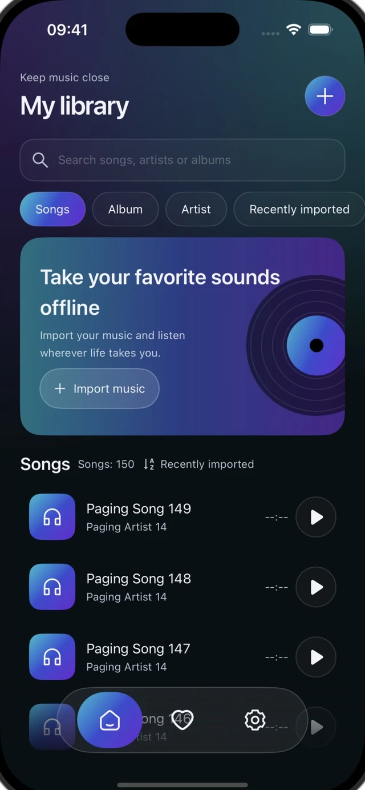
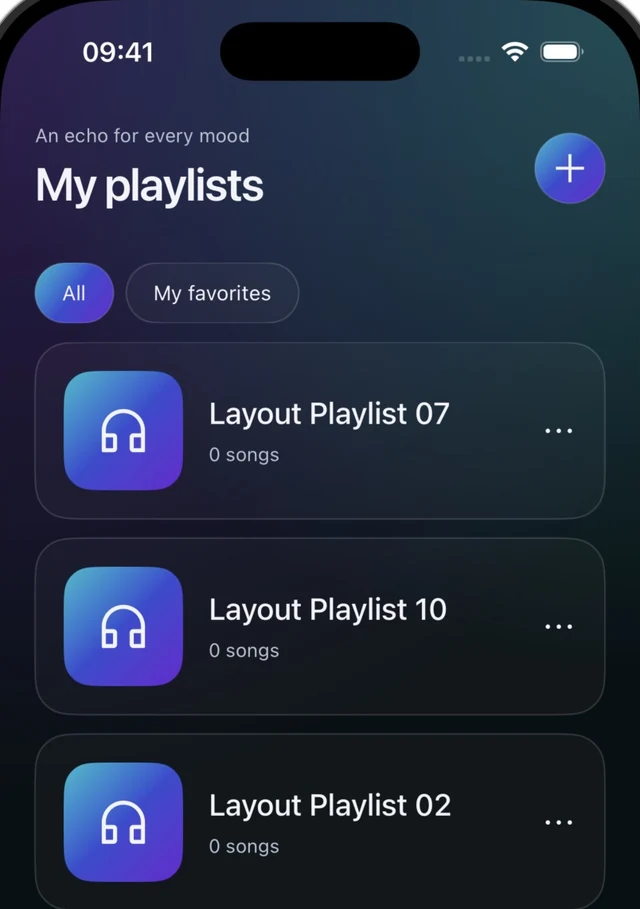
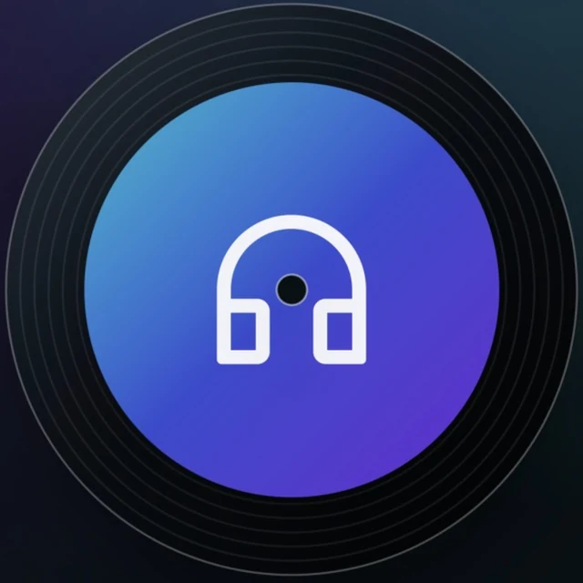

For iPhone and Android
Let your music glow.
The albums you come back to. The songs you keep close. Bring your own music together, and take it offline with Aurody.
Your own files. No account required.

A home for the music you keep.
From the first file you import to the playlist you know by heart. Aurody is a player for your own collection, with no built-in streaming catalog.
Bring your collection along.
Choose a file, share from another app, or send music from your computer. Three ways in, one place to listen.
Choose your files
Select music with the system file picker. Imported files are copied into Aurody, so keep a copy of your originals.
Share to Aurody
Send audio from another app through your phone’s share menu.
Send from your computer
Open Wi-Fi transfer in Aurody, then enter the address and temporary code shown on your phone in your computer’s browser.

An album for every moment. A place for every song.
Browse songs, albums and artists. Search your collection, save favorites, and make playlists that feel like you.
Help & supportKeep listening. Even when you disconnect.
Play music you have imported without a connection. Keep your queue close, use system playback controls, and follow along with embedded or local LRC lyrics.
Audio files and local lyrics are yours to provide. Aurody does not search for songs or fetch lyrics automatically.

A little help, when you need it.
Find a way to import, understand your files, or get in touch with a question.